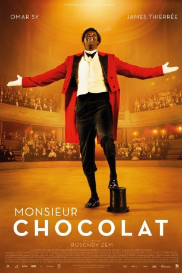
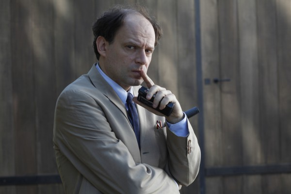

#4462 Monsieur Chocolat
 gesehen am 17.10.2016
gesehen am 17.10.2016
 
 IMDB-Wertung: 7.1 / 10
IMDB-Wertung: 7.1 / 10  Metascore: 0
Metascore: 0 
Chocolat erzählt die wahre Geschichte des erfolgreichen ersten schwarzen Zirkusclowns Frankreichs mit eben diesem Namen.
Jahr: 2015
Dauer: 119 Minuten
FSK:
Land: Frankreich Studio: DCM Film DistributionTonspuren:
Untertitel: Deutsch,
Auflösung: 1080p (1920x1040) Größe: 6348 MB
Genre: Biographie, Drama
Regisseur: Roschdy Zem
Drehbuch: Marvel Animation
Soundtrack:
Darsteller:
 Omar Sy als Rafael Padilla dit Chocolat
Omar Sy als Rafael Padilla dit Chocolat- Clotilde Hesme als Marie Hecquet
 Olivier Gourmet als Joseph Oller
Olivier Gourmet als Joseph Oller Frédéric Pierrot als Théodore Delvaux
Frédéric Pierrot als Théodore Delvaux Noémie Lvovsky als Yvonne Delvaux
Noémie Lvovsky als Yvonne Delvaux- Alex Descas als Victor
 Olivier Rabourdin als Firmin Gemier
Olivier Rabourdin als Firmin Gemier- Héléna Soubeyrand als Régina Badet
 Xavier Beauvois als Jacques Potin
Xavier Beauvois als Jacques Potin- Hocine Choutri als Ray
-  Denis Podalydès als Louis Lumière
- Andy Gillet als Le travesti
 Félix Bossuet als Gustave
Félix Bossuet als Gustave- Mikael Buxton als Un aristocrate , uncredited
- Julia Effertz als Esmeralda , uncredited
- Alexia Giordano als Une fille de joie , uncredited
- Elise Lissague als Une fille de joie , uncredited
- James Thierrée als George Footit dit Footit
 Alice de Lencquesaing als Camille
Alice de Lencquesaing als Camille- Thibault de Montalembert als Jules Moy
- Christophe Fluder als Marval, le lilliputien
- Antonin Maurel als Le clown Ortis
- Mick Holsbeke als Le clown Green
- Wilfred Benaïche als Monsieur Constantine
- John Arnold als Le Corse
- Olympe als Suzanne, 6 ans
- Timothé Vom Dorp als Eugène, 8 ans
- Clovis Fouin als Frédo
- Cédric Appietto als Leca
- Dan Herzberg als Fergus
- Eric Kailey als Gardien Mace
- Bô Gaultier de Kermoal als Lee
- Marlon Bennett Joseph als Rafael
- Lazaro De La Caridad Hidalgo Wilson als Basil
- Matthieu Rozé als Gendarme imberbe
- Stefan Godin als Gendarme moustachu
- Brahim Takioullah als Géant Landon
- Jean-Christophe Herveet als Père Pantoni
- Bruno Podalydès als Auguste Lumière
- Fernando Echevarría als Monsieur Delmont
- Phénix Brossard als Eugène, jeune homme
- Luc Antoni als Le p��re
- Achille Potier als L'enfant
- Anne-Lise Kedvès als Cliente
- Isabelle Mazin als L'épicière
- Jean-Gilles Barbier als Joueur âgé
- Pierre Alloggia als Guide
- Jean-Pol Brissart als Professeur Lannelongue
- Luis Francisco Cruz als Le père de Rafael
- Linnett Hernandez Valdes als La mère de Rafael
Datei: X:\2015(G-M)\Monsieur Chocolat (2015, FSK, 1920x1040).mkv seit 22.09.2016
Festplatte: HD 2015(A-Z)
 Es gibt insgesamt 129 Filme in der Gruppe '2015(G-M)'
Es gibt insgesamt 129 Filme in der Gruppe '2015(G-M)'